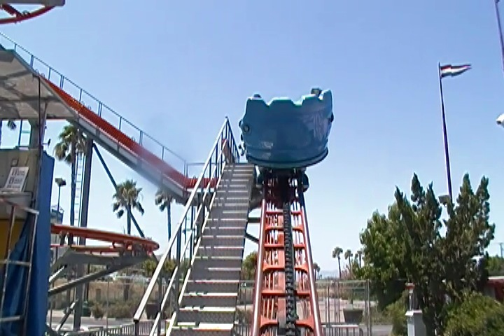

| |
Screamin Demon Review

We're here at Castle Park where we'll be riding Pole Position...I mean Screamin Demon. Once you get in the seat, the ride operator pulls down your lap bar and away you go. you climb up the first lifthill and then you go through a turn into the 2nd Part of the lifthill. It almost feels like you are a peep on RCT1 with the double lift hill. Anyways, after the 2nd part of the lifthill, you go through some straight track before making your first turn. Then you go through the first turn, where your car finally starts to spin. Now this is the part that shocked me. We actually began to spin. NO I'M SERIOUS!!! WE WERE REALLY SPINNING ON A POLE POSITION CLONE!!! AND I WAS HAVING FUN!!!! If you've seen my past updates, you'll know how much I've ripped on Pole Position for being a peice of sh*t. Though it had been surprising me, getting better. And now I ride this and its actually spinning. Yeah, I'm shocked. We keep spinning through the straight track until the next turn. After the third switchback, we go through some straight track. On Pole Position, theres a trim brake here. But not on this ride. We zoom past it. After that, there is a turn which is followed by an itty bitty dip. Then you go down these drops, still spinning. But now it's time for the BIG SCARY DROP!!!! The drop is totally crazy since its completely trimless and always spinning. Then you go through straight track and another turnaround spinning quite well into the brake run. I was surprised by the fact that it was spinning and actually fun. Still not one of the best spinners ever. But hey. Its trimless, and this ones fun.
5/10
Location: Castle Park
Opened: 2008
Built by: Fabbri
Last Ridden: July 9, 2011
I have ridden this exact same ride at the following parks.
American Fairs
Power Park
Screamin Demon Photos


|